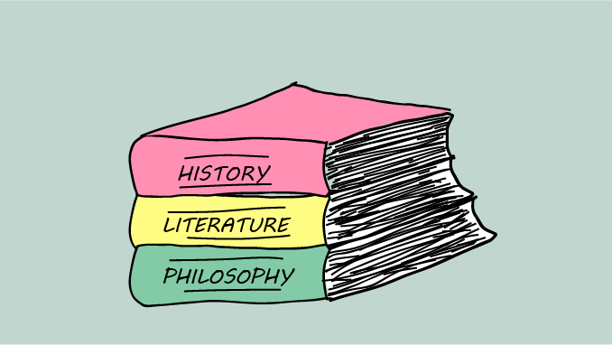
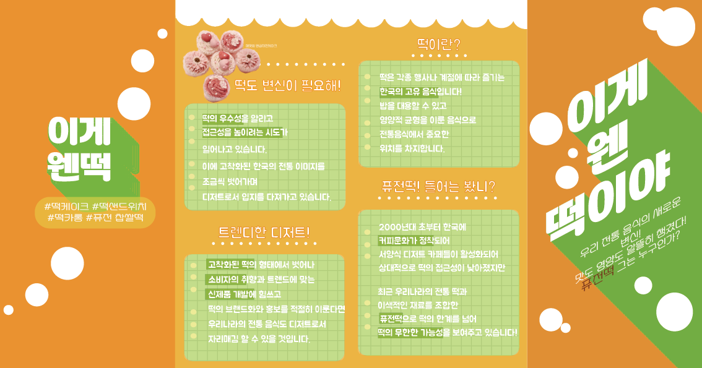
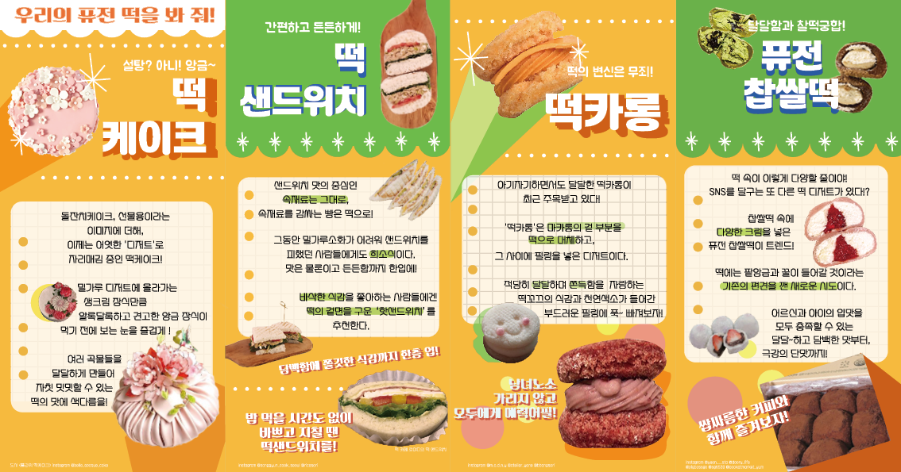
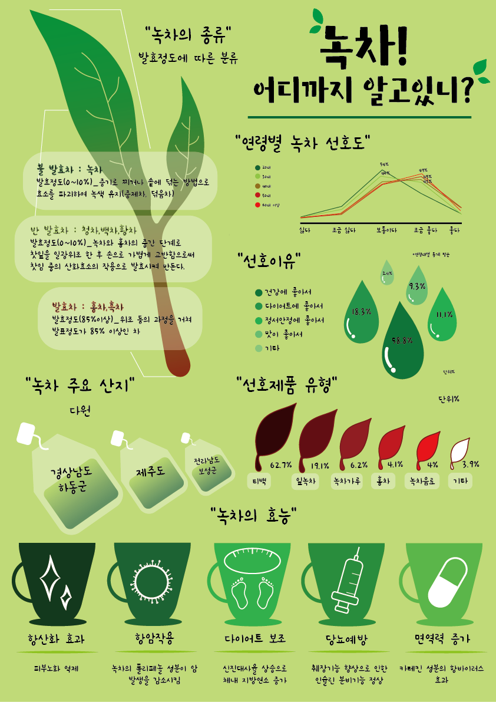
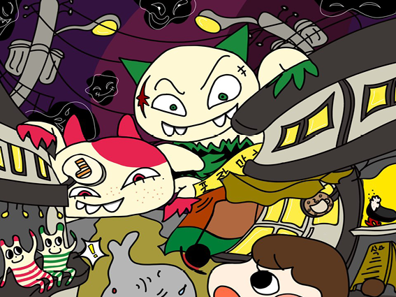
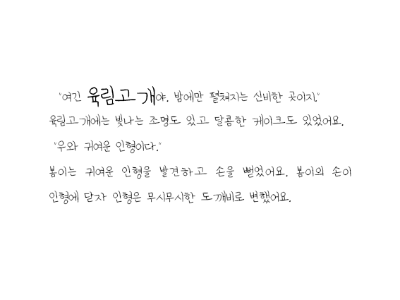

복수전공

복수전공은 디지털인문예술전공으로 시각디자인과와 비슷하게 볼 수 있지만, 인문학적 지식 과 프로그래밍기술 모두 다룰 수 있는 능력을 기르기위한 학과입니다.
다양한 강의가 있지만 현재는 디자인수업을 위주로 수강하고 있습니다. 포토샵, 일러스트, 프리미어, 인디자인 등의 어도비 프로그램의 수업을 수강하였습니다.

 
(위의 사진은 디지털콘텐츠제작실습 수업에서 만든 '떡 팸플릿'입니다)
(위의 사진은 데이터아트 수업에서 만든 '녹차 인포그래픽'입니다)
 (위의 사진은 캡스톤디자인:지역문화콘텐츠기획 수업에서 만든 '봄이의 꿈속여행'동화책의 한 장면입니다)
(위의 동영상은 프리미어를 사용해 처음 제작 해 본 자유주제 동영상입니다.)